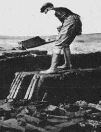

After reading Francis Jeffers' "Peat, a Cheap and Renewable Fuel" (MOTHER NO. 31), I must say that I find the author's ideas somewhat disturbing. No doubt, peat is less expensive than some other alternative source of energy . . . but I feel strongly that its use is ecologically unsound and should be discouraged. Some background information may help to clarify my reasons for this belief.
Peat bogs develop in humid regions, at locations where drainage is blocked so that the movement of water slows and its carrying capacity is reduced. Where this condition occurs-in a lake, pond, or old streambed-organic matter accumulates faster than it can be borne away. The result is that large volumes of such material sediment quickly, the area fills, and its bottom rises (a self-accelerating process). Aerobic decomposition is meanwhile replaced over time by a slower, anaerobic breakdown.
Eventually the buildup of organic matter reaches the surface and creates a condition in which rooted emergent plants may grow. Water-loving species then colonize the periphery . . . and from that time on, open water rapidly disappears as the site fills with a spongy substrate.
The inheritors of the filled-in area are plants that have adapted to drier conditions and evolved techniques to exploit them. These thrive, reproduce, and increase in density . . . and by go doing they alter the site enough to effectively eliminate themselves and provide more suitable growing conditions for later successional plants (and, in turn animals, along with other associated and dependent webs and chain life which join in the transfer of energy and cycling of nutrients). This is delicate and immensely complex phenomenon with no real stages . . . simply slow and continual changes over time within the context of overall unity.
A bog, then, is a fragile balance of water gain and loss and represents a seral or intermediate stage in a dynamic succession. If left undisturbed, such an area will fill and dry and be inhabited by more mesic plants. Grasses, shrubs, and finally trees will occupy the land, and eventually a climax forest will stand where a bog once lay.
This development, however, depends on the tremendous amounts of nutrients which are tied up in a bog . . . since these deposits become the initial soils of the future forest. If peat is removed from the site, the nutrient bed will be depleted and the succession pushed backward in time. Perhaps hundreds of years-depending on the extent of the damage-may be necessary to return the bog to its original condition.
Mr. Jeffers' analogy of bog and forest management is somewhat misleading. Forests, by their very nature, are climax systems that perpetuate themselves over time. "Moderate" cutting of trees is therefore a somewhat sounder practice than "moderate" cutting of peat. Selective felling and the removal of windthrows and diseased trees may remove valuable nutrients, but it may also increase the vitality of the forest by increasing the growth of stronger or younger specimens . . . thus making for efficiency of reproduction.
Bogs, on the other hand, have none of the forest's stability but represent a fragile stage of plant succession. Any interference- however "moderate"- with such a system will destroy a delicate balance that might take centuries to renew.
Especially drastic damage can be caused by well-meaning but shortsighted dredging plans. The health of a bog-and consequently of any systems that lie downstream and are linked to it in some physical way-depends on its water balance . . . and this is easily destroyed. The principle was well demonstrated in Florida when a group of engineers dug a few canals of moderate size across wetlands to facilitate drainage . . . and thus severed a delicate and beautiful ecosystem from its lifeblood.
Granted, the Florida intervention was on a grand scale, but in this field we still have no way to assess the consequences of even small misguided actions. In any case, the extent of the damage depends on one's point of view. Limited digging or dredging might appear harmless to human observers, but what of a fish trying to spawn or an insect hatching downstream? What of the birds . . . the colorful, secretive species that inhabit wetlands in astounding numbers? What of the fragile orchids which depend for their very existence on the bog community? They aren't mobile and can't remove themselves to another place, or wait for the right conditions to come along and allow them to prevail again. What of the mosses, insectivorous plants, plankton, amphibians, and all the rest? No, in this instance moderation is not the key . . . it's simply a padded sledge against a glass figurine.
Peat bogs spread over some 80 million acres today only because they've been left in their natural state to fill and build. It has taken eons of time for these areas to become what they are. Moreover, to think of a bog as an autonomous system is certainly not sound ecologically. This fragile community is inextricably linked to the delicate fabric of life in the biosphere. To tamper with it needlessly for short-term gain will have unimaginable effects elsewhere. The fact that we may not see these effects directly doesn't mean that they don't exist, or make them any the less serious. For this reason-the essential unity of all life-we must avoid shortsighted solutions to our need for energy, and look instead to the sound long-term alternatives offered by sun and wind.
Or the even sounder three-part alternative: [1] less people limited to [2] less per-capita energy and resource consumption supplied only by [3] renewable sources.-MOTHER.
Climax: a stable stage or community of plants which have successfully adjusted to a certain environment.
Emergent plants: those that are rooted in shallow water but grow mainly above the surface.
Mesic plants: those that require moderate amounts of water.
Seral: from "sere", a series of ecological communities that succeed one another in the development of an area or formation.
Substrate: the base on which an organism lives (as a plant on soil)
|
 |
|
|